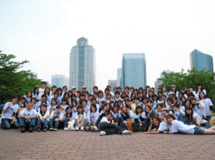

幕チャリ
楽しんで、買って、社会貢献
「幕張チャリティ・フリーマーケット＝幕チャリ」は、千葉市幕張の神田外語大学キャンパスを舞台に、学生、大学、地域住民、企業、NPO、自治体などが協働して、毎年5月に開催されるチャリティ・イベントである。の開始からで15回を数え、Step3では最大規模のプロジェクトとなってきた。
これまでの来場者は約3万人、参加した学生は約2千人、生み出した金額は2,000万円にのぼり、アジアの自立支援や震災復興支援などに役立てられてきた。「継続は力なり」を文字通り実証したプロジェクトである。

チャリティを定着させたい
きっかけは、英国のOxfam Shop を実見した学生が「誰でも気軽に社会貢献できる場をつくろう」と考えことにある。それを和田ゼミ起業研究会が引き継ぎ、幕チャリは誕生した。そこには学内と地域を活性化させ、チャリティを広く日本に定着させたいとの想いが込められていた。
オーガナイザー:
平井真純・松本有加・板谷桜子・福壽真里
合言葉は「誰でも気軽に楽しくできる社会貢献システムを幕張から日本に広めよう！」。ロゴマークは、Makuhari に、Charity とContributionの頭文字「ｃ」を加え、「チャリ」の響きには、自転車で軽く地域を散策するように、多くの人々に気軽に参加してもらいたいという願いと親しみも込められていた。
 ロゴデザイン: 秋枝宏美
ロゴデザイン: 秋枝宏美
モノに時間を加味してお金に換える
「3つの寄付」の循環
幕チャリは「モノの寄付」「時間の寄付」「お金の寄付」という「3つの寄付」をフリーマーケットの場でつなぎ、それらを循環させて「お金」を生み出す仕組みである。どのような貢献であれ、「お金」の形であれば使途の自由度が最も高いことから、幕チャリは「モノに時間を加味してお金に換える」仕組みをめざした。
- 「モノの寄付」
-

- 販売される商品は、地域住民や社員、学生や教職員などから寄付された「捨てるにはもったいない」もの。「もったいない」というエコの意識、「役に立ちたい」という貢献の意識から、衣類、バッグ、アクセサリー、食器、本、おもちゃ、生活雑貨など多様な寄付品が寄せられ、協賛企業からは新品やオークション品なども提供される。
- 「時間の寄付」
- 
- 寄付品の集荷、分類、値付け、広報、設営、販売、ゴミ掃除など、事前準備から当日の現場まで、学生を中心にすべてをボランティアが担う。空き時間を工夫しての「時間」の寄付である。フードブースの出店、来場者を楽しませるパフォーマンスなどを引き受けるボランティアもあり、どんな場面もボランティアが寄付してくれた時間が支えている。
- 「お金の寄付」
-

- フリーマーケットでの商品購入そのものが、実はそのまま「お金」の寄付となっている。来場者は買物を楽しみながら自然に社会貢献ができ、モノはお金に姿を換えていく。また、フードブースなどの売り上げやオークションなどの売り上げも同様に寄付となる。
協働のためのプラットフォーム
こうした「3つの寄付」を循環させるコアとなるのが、学生ボランティア団体CUP(Create Universal Peace)である。部活のような常設組織でなく、幕チャリ開催のためにそのつど参集するネットワーク型の柔軟組織で、ボランティア各人の自主性で支えられている。
幕チャリは、様々なアクターをつなぐ「協働のためのプラットフォーム」となり、CUPは、個々の歩みは半歩であっても、皆で踏み出せば大きな力となることを実感させるカタリスト（触媒）となってきた。
地域との連携・地域の活性化
地域との連携も不可欠である。特に「モノの寄付」と「お金の寄付」の中心となるのは、寄贈者であり購買者でもある地域住民である。地域の企業、商店会、町内会、自治体なども重要なサポーターで、幕チャリは地域の賑わいをうみだす新たな場となった。

幕チャリの継続が
アジアの自立につながる
寄付金を活かす連携
幕チャリが生み出した「お金」は、プロフェッショナルな非営利団体とタグを組み、自立的で持続的な成果を産み出す事業に寄付されてきた。特に第2回からは、日本初のコミュニティ型公益信託「アジア･コミュニティ・トラストAsian Community Trust(ACT)」へ継続的に寄付を続けている。学生だけでは寄付事業の選択が容易でないことから、アカウンタビリティが確立した専門家集団を通してアジアのNGOに資金が配布され、自立支援に活用される道を確立してきた。
カンボジアの支援先を訪問
幕チャリを中心的に担った学生たちは、2010年と2017年の2回、寄付金が実際に活用されているカンボジアの農村を訪問した。日本では幕チャリを開催して寄付金を送れば「終了」したことになるが、その寄付金をもとに自立をめざすアジアの人々にとっては、そこからが新たな「出発」であることに気づいたからである。 カンボジアでは「自給自足できる力を身につけた」と誇らしげに語る農民と出会うことができ、学生たちは幕チャリの貢献が人々の笑顔を増やすことに役立ってきたことを実感する。それは、幕チャリを単なるイベントで終わらせてはならず、また、継続開催していくことが持続的な支援になるという原点を再確認させるものとなった。

東日本大震災復興支援 緊急幕チャリ
「誰もが誰かの役にたつ」
「3.11を忘れない」

の「東日本大震災」は甚大な被害をもたらした。幕張にも被害は及び、幕チャリの開催も危ぶまれたが、こうした時にこそ自分たちにできることを必ずやろうという強い想いから「東日本大震災復興支援 緊急 幕チャリ」を開催した。「3.11を忘れない」を合言葉に「誰もが誰かの役にたつ」を信念に、生み出した「お金」は被災した教育現場への復興支援にあてられた。

デザイン: 佐藤謙/ ロゴ: 高橋夏希


当日のリーフレット」PDF
デザイン: 佐藤謙 + 野瀬晶世 / ロゴ: 高橋夏希
2011年5月発行